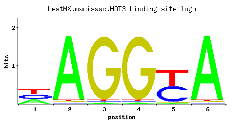

MOT3
YMR070W, ROX7
Nuclear transcription factor with two Cys2-His2 zinc fingers; involved in repression of a subset of hypoxic genes by Rox1p, repression of several DAN/TIR genes during aerobic growth, and repression of ergosterol biosynthetic genes
Best-performing DNA-binding model.

View and copy the recommended matrices ↘
A | 0.329 0.964 0.012 0.012 0.012 0.964 C | 0.329 0.012 0.012 0.012 0.488 0.012 G | 0.012 0.012 0.964 0.964 0.012 0.012 T | 0.329 0.012 0.012 0.012 0.488 0.012
A | 32 96 1 1 1 96 C | 32 1 1 1 48 1 G | 1 1 96 96 1 1 T | 32 1 1 1 48 1
A | 0.03 1.10 -3.28 -3.28 -3.28 1.10 C | 0.60 -2.71 -2.71 -2.71 1.00 -2.71 G | -2.71 -2.71 1.68 1.68 -2.71 -2.71 T | 0.03 -3.28 -3.28 -3.28 0.42 -3.28
Alternative candidate matrices 5
Historical matrix candidates from the original ScerTF database. Expand a source to inspect its original logo, scores, and matrix values.
MOT3_AFoat et. al.P = 0.4861View matrix ↘
MOT3_BFoat et. al.P = 0.005458View matrix ↘
MOT3_CFoat et. al.P = 0.0009932View matrix ↘
MOT3_DFoat et. al.P = 1View matrix ↘
MOT3Harbison et. al.P = 0.001225View matrix ↘
Gene-level annotations and interactions.
Genes bound in ChIP-chip experiments 63 genes
YAL004W, YAL059W, YAR047C, YAR073W, YAR075W, YBL020W, YBL021C, YBL022C, YBL029W, YBR012C, YBR012W-A, YBR012W-B, YBR013C, YBR032W, YBR056W, YBR083W, YBR089C-A, YBR090C, YBR097W, YBR105C, YBR106W, YBR119W, YBR210W, YBR275C, YBR294W, YDL044C, YDL063C, YDR022C, YDR023W, YDR065W, YDR278C, YDR339C, YDR340W, YDR420W, YEL055C, YEL069C, YEL070W, YER137C, YFR016C, YGL005C, YGL190C, YHR185C, YIL095W, YIL096C, YIL099W, YIL119C, YIR020C, YJL022W, YJL148W, YJL162C, YJR158W, YJR159W, YKL127W, YKL165C, YKR073C, YLR035C, YML071C, YMR106C, YOL022C, YOL121C, YOR042W, YPL130W, YPR072W
Genes affected by TF deletion 163 genes
YCL055W, YHL044W, YIL080W, YAL068C, YDL131W, YGL039W, YGL009C, YFR036W, YLR056W, YLR461W, YLR432W, YOR065W, YPL049C, YIL082W, YJR047C, YLR219W, YMR013C, YMR015C, YOR252W, YPL240C, YBR157C, YLR089C, YLR435W, YOR032C, YPL016W, YER011W, YBR092C, YHR081W, YIL176C, YOL136C, YOR287C, YPL283C, YCL017C, YML083C, YML058W-A, YNR028W, YNL307C, YMR070W, YMR102C, YOR318C, YDR281C, YGR211W, YNL300W, YBL093C, YBR012C, YCR048W, YCR050C, YDR044W, YNL024C, YNR071C, YDR196C, YLR068W, YMR173W, YNL279W, YOR043W, YDR077W, YIL121W, YBR196C, YLR037C, YLR437C, YOR010C, YFL020C, YFR015C, YIR042C, YJR151C, YLR348C, YMR145C, YOL150C, YBR293W, YHR215W, YJL217W, YJL223C, YPL092W, YJR150C, YJR121W, YLR349W, YOL143C, YPL137C, YAR071W, YAR075W, YBR290W, YCL027W, YGR221C, YHR216W, YJL216C, YJL218W, YKL150W, YNR001C, YBL099W, YGR294W, YNR073C, YPL189W, YIL114C, YBR177C, YGL029W, YLR042C, YBL100C, YMR056C, YML130C, YNL094W, YNR072W, YNR076W, YOR236W, YEL059C-A, YGR108W, YGR109W-A, YMR173W-A, YOR084W, YOR394W, YGR049W, YJR159W, YOL122C, YBR301W, YLR202C, YMR272C, YDR481C, YFR018C, YGR078C, YIR018W, YJR158W, YLR353W, YOL119C, YOL151W, YDL241W, YDR297W, YER044C, YNR044W, YER168C, YMR037C, YAL060W, YDR268W, YEL065W, YEL038W, YHR136C, YOR095C, YGL255W, YMR038C, YNL104C, YBR210W, YEL068C, YGL032C, YHR137W, YKL096W-A, YLR113W, YLR452C, YBR085W, YCR104W, YNL167C, YBL051C, YIL011W, YKL164C, YML047C, YPL106C, YGR086C, YLL019C, YOL161C, YOL101C, YOR372C, YPR009W, YGL162W, YJL170C, YLR179C, YMR307W
Genes supported by both experiments 5 genes
YAR075W, YBR012C, YBR210W, YJR158W, YJR159W